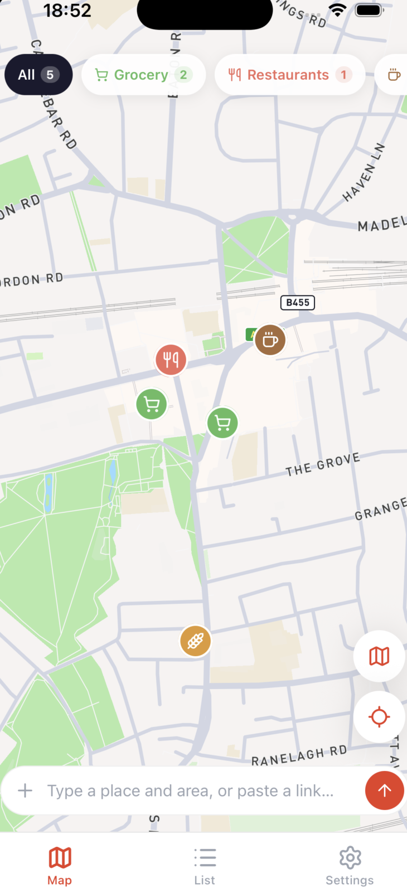
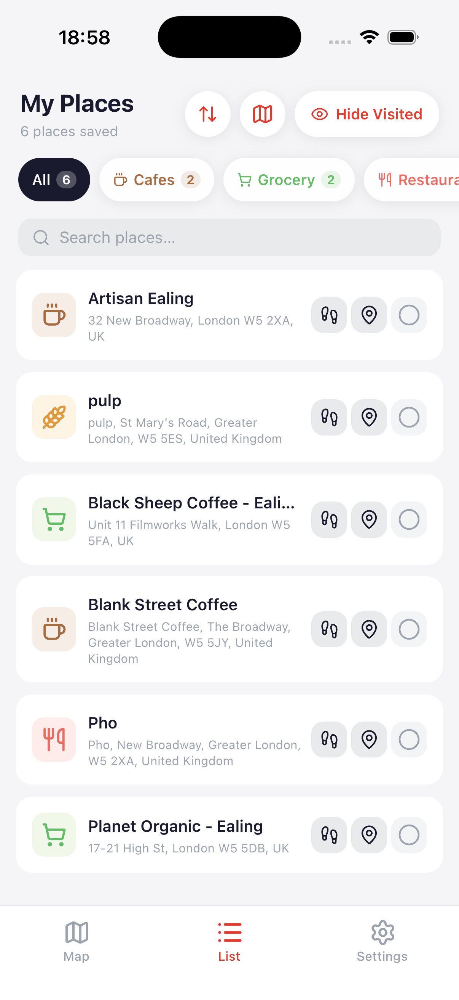
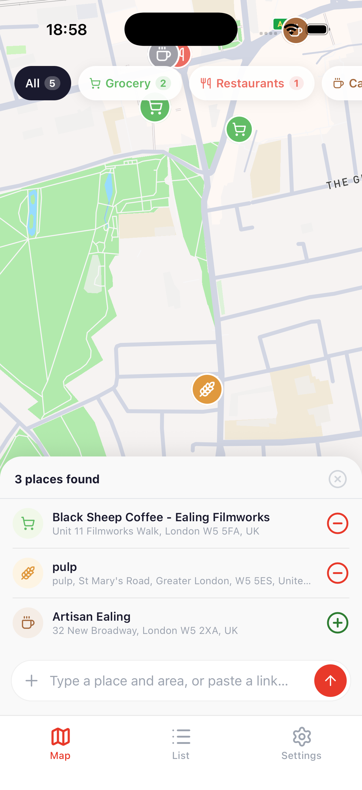

Saw a café on Instagram? A restaurant in a TikTok? Or just a name scribbled in a note? Share it with Waypoint — our AI finds the place and drops it on your map.

Waypoint understands links, text, and everything in between — so you can capture a place the moment you see it, not later when you've forgotten the name.
Hit the share button on any post — a reel, a listicle, a Google Maps URL — and Waypoint picks up wherever the place is mentioned.
A café name and street. A neighborhood. An address fragment. Our AI figures out what place you meant, even when the spelling is off.
Places are sorted into categories automatically — cafés, restaurants, hotels, parks, shops — so your map stays legible as it fills up.
Every saved restaurant, every bookmarked bar — finally in one map, not scattered across 14 Notes and a chat thread.
Keep a running list of "we should go here". Waypoint turns a sea of shares into a shortlist you can actually use on a Friday.
Rebuild your life one café at a time. Drop pins as friends recommend — they stay put, even when your memory doesn't.
Every place is tagged automatically — cafés, restaurants, hotels, bars, shops, parks, more.
Sort, search, or hide places you've already been.

Waypoint shows you what it found. Accept, skip, or add another — nothing lands on your map without a quick look.

Planning dinner? Just restaurants. Coffee run? Just cafés. Toggle categories on and off at the top.
When you share a link or paste text, Waypoint analyzes the content — captions, descriptions, geotags, even on-screen text in videos — and cross-references it against map data to find the exact venue. You always confirm before it saves.
Yes. Share any post, reel, or TikTok directly into Waypoint from the native share sheet. We also support Google Maps links, Apple Maps links, and plain web URLs.
If Waypoint isn't sure, it'll show you its best guesses side by side — you pick the right one, or add a hint (neighborhood, city) and try again.
Waypoint is free for unlimited saved places. A Pro plan is coming for power users who want collaboration, trip planning, and offline access.
iOS today, Android next. Waypoint syncs to iCloud so your places follow you between devices.